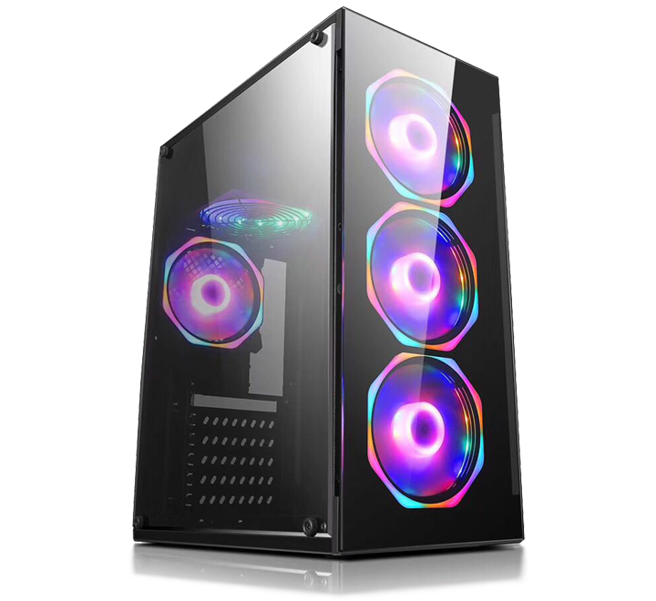
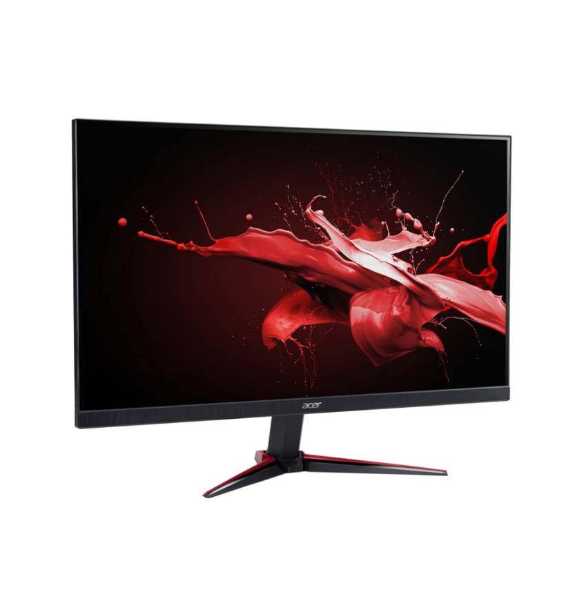
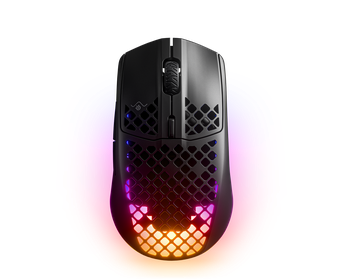
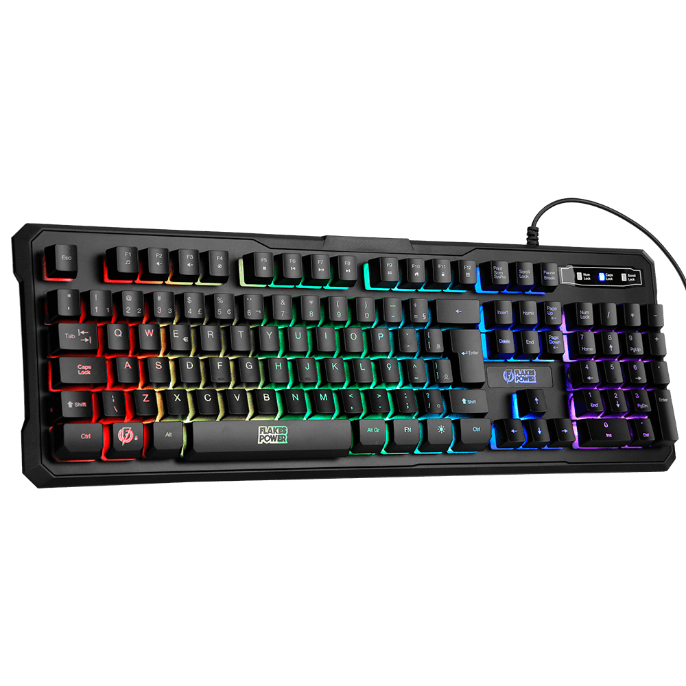
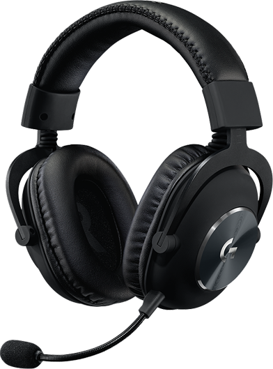

Kit Gamer
PC, Monitor, Mouse, Teclado, Headset
PC
Projetado para garantir um desempenho poderoso, inteligente e eficiente, este PC gamer também é ideal para jogadores de live streaming que jogam e gravam simultaneamente.
 Clique aqui para adquirir!Monitor
Elimina as rupturas e atrasos da tela durante os jogos, apresentando uma sincronização dos quadros do monitor muito mais eficiente. Sua experiência visual será mais suave, fluida e responsiva.
 Clique aqui para adquirirMouse
O Mouse Iron da Leadership foi desenvolvido para oferecer conforto durante jogos de longa duração. De construção leve e ergonômica, proporciona máximo conforto, qualidade e durabilidade.
 Clique aqui para adquirir!Teclado
Teclado Gamer Mecânico T-Dagger. Melhora a experiência nos jogos!
 Clique aqui para adquirir!Headset
É projetado com e para profissionais dos eSports. Feito para durar com armação em alumínio e arco de cabeça em aço. As almofadas de ouvido e cabeça de espuma viscoelástica e couro sintético superior mantêm você confortável durante maratonas de treinamento e sessões de competição.
 Clique aqui para adquirir!